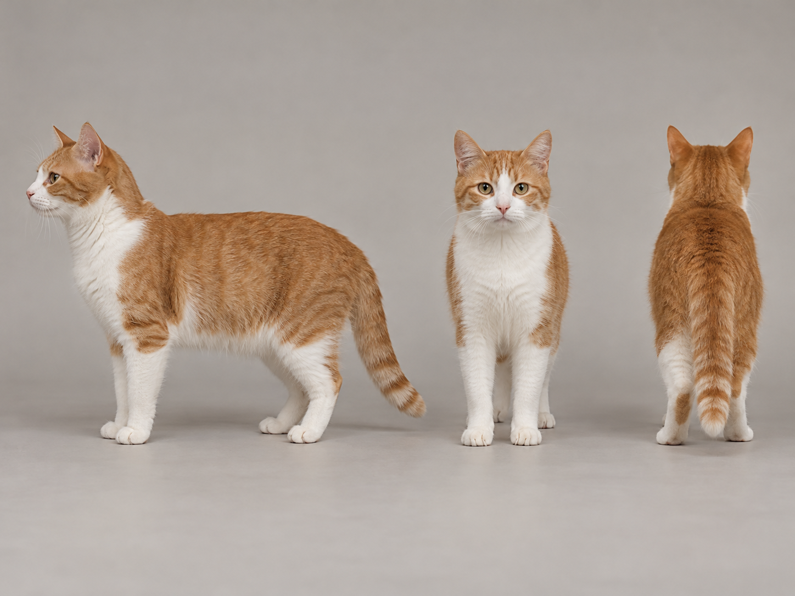

添加宠物照片建议包含正面、侧面与全身照 · PNG / JPEG / WebP · 最多 5 张
上传的宠物照片会显示在这里
上传宠物照片后显示
×
256–2304 像素，32 的倍数三视图会作为统一角色参考传递给后续关键帧。
先上传 2–5 张照片并完成右侧生成设置
三视图预览 · 可作为后续所有帧的角色参考
宠物三视图单张合成参考图 · 侧面 / 正面 / 背面

一张图展示同一只宠物的三个角度，可作为后续关键帧的角色参考
检查三视图是否准确；确认后进入关键帧制作